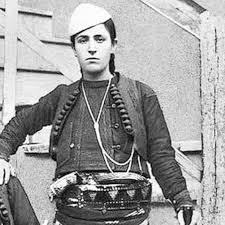
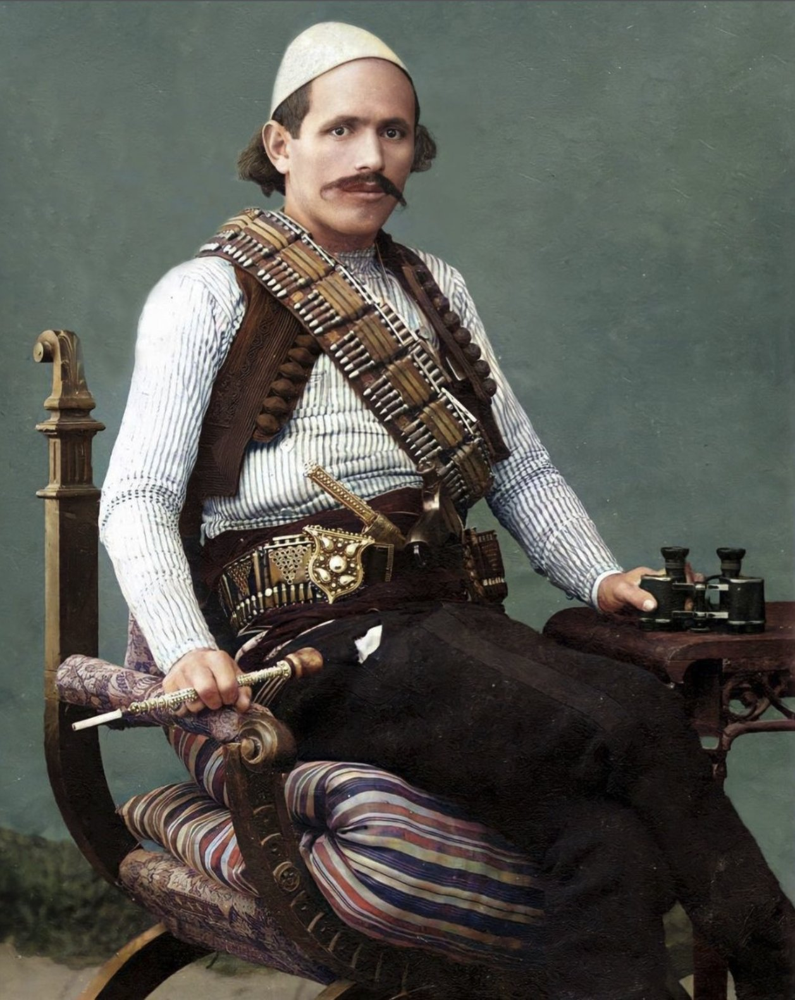
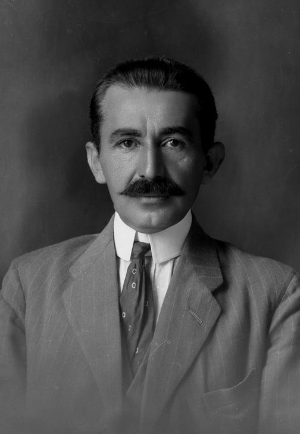

Shote Galica ka lindur në fshatin Radishevë të rajonit të Drenicës në Kosovë. Ajo ishte motra e 6 vëllezërve![3] Ajo u martua me Azem Galicën në vitin 1915. Në vitin 1919 Shota mori pjesë në Kryengritjen e Dukagjinit dhe të Junikut në 1921–1923. Në vitin 1925 pas vdekjes së burrit të saj, Azem Galicës, ajo mori detyrën e tij dhe luftoi së bashku me Bajram Currin në Has të Prizrenit.Ajo mbahet mend për kapjen e një komandanti serb dhe një numri ushtarësh në Çikatovë. Në korrik 1927, ajo u tërhoq në Shqipëri dhe kaloi muajt e saj të fundit në Fushë-Krujë, ku ajo vdiq në moshën 31 vjeçare. Shote Galica ishte një legjendë virtuale në kohën e saj. Ajo mbahet mend për thënien "Jeta pa dije është si një luftë pa armë".
U lind në dhjetor të 1889 në Galicë (asokohe pjesë e pesë bajrakëve të Drenicës), i biri i Bejtes (Bejtullahut) dhe Sherifes së Kurt Selacit - nga martesa e parë e të atit kishte dy vëllezër, Seferin dhe Zenelin,[1] ndërsa të një barku kishte motrën Mihanën dhe vëllain e vogël, Ademin. Më 1906 në një revoltë lokale kundër Shemsi Pashës, mbeti i vrarë i zoti i shtëpisë, Bejta. Kjo ngjarje dhe ndeja ndër oda e burrëruan parakohe Azemin.Në dimrin e viteve 1915–1916, gjatë Luftës së Parë Botërore, Serbia u pushtua nga Bullgaria dhe Austro-Hungaria pasi Fuqitë Qendrore fituan një fitore në Kosovë në fund të nëntorit 1915 - Azem Galica filloi një rezistencë të armatosur kundër pushtuesve të rinj. [ 5 ] Azemi u martua me Shote Galicën po atë vit dhe ajo iu bashkua njësisë së tij të luftëtarëve. Nga viti 1915-1918, Azemi kundërshtoi si forcat austro-hungareze ashtu edhe ato bullgare që kishin pushtuar Kosovën.
U lind në Vushtrri në 1873-shin, i ati ishte zhvendosur në qytet për një post në administratën e ushtrisë osmane[2] Familja e tij ishin bejlerët e Vushtrisë, dera e tyre ka qenë një familje e nderuar spahinjsh vendas.[3] Në 1921-shin në kujtimet e tij për Kryengritjen e 1912-shit shkruan se 150 vjet më parë, gjyshi i tij Haxhi Aliu i Abdullah Ali Berishës nga Polanca e Drenicës dhe u vendos në Vuçiternë.[4] Sipas Prishtinës, lidhjeve të familjes me Drenicën i kushtoheshin këngë.Mësimet e para Hasani i kreu në vendlindje. Vazhdoi shkollimin në gjimnazin frëng të Selanikut, më pas në Stamboll u shkollua në kolegjin administrativ (Mülkiye-i Sultaniye)[2] ku u diplomua për drejtësi.[6] Në Stamboll ra në kontakt me nacionalistët shqiptarë dhe më pas iu bashkua xhonturqve, sepse besonte se me fitoren e tyre kombi shqiptar do të merrte autoniminë brenda Perandorisë Osmane.[2]
